Transcription-Related Techniques
1. Amount: how much mRNA is present?
- Northern blot
- qRT-PCR
- microarrays
- RNA-seq
Quantifying mRNA levels in vivo - one gene
Northen Blot
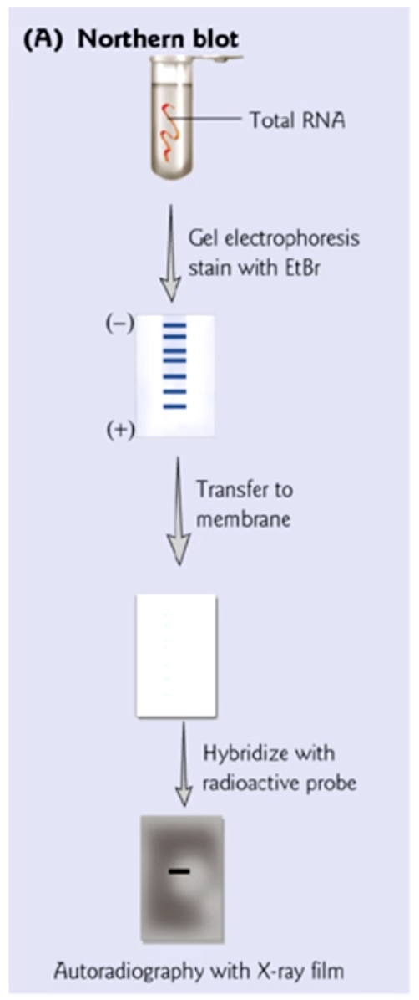
RT-PCR
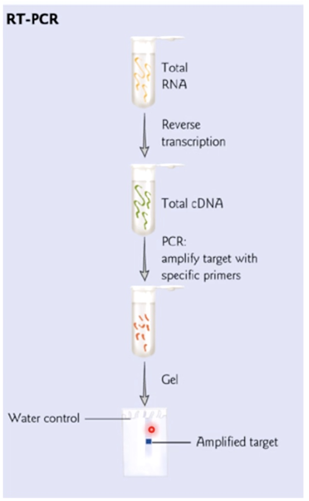
Quantifying mRNA levels in vivo - many genes
Microarrays
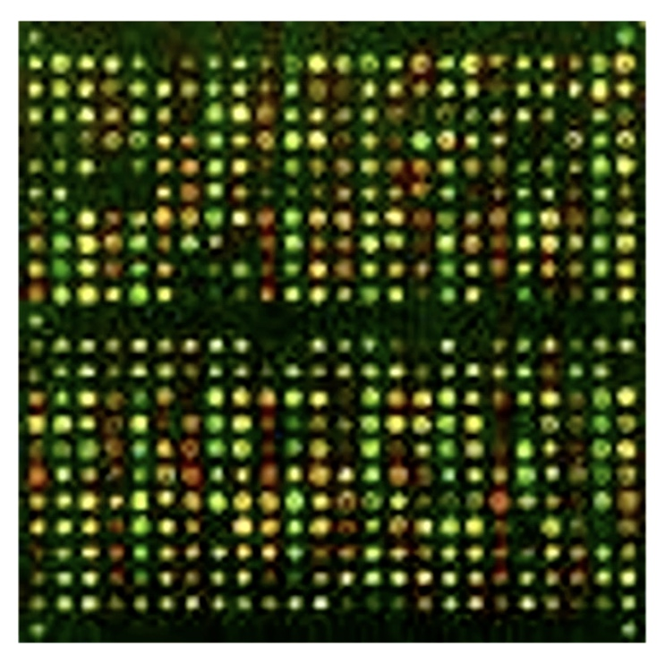
RNA-Seq
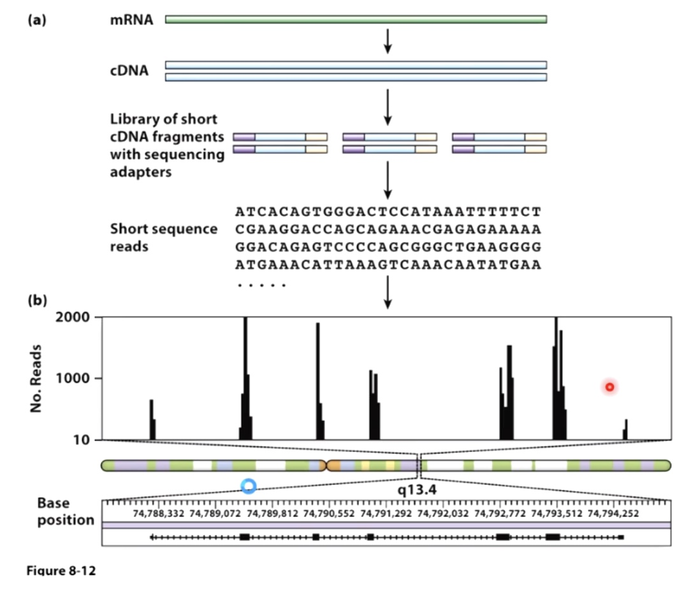
2. Location: where is the RNA found in the cell/organism?
- In situ hybridization
- dCas9 RNA targeting
Determining the Location of RNAs - Fixed Tissues
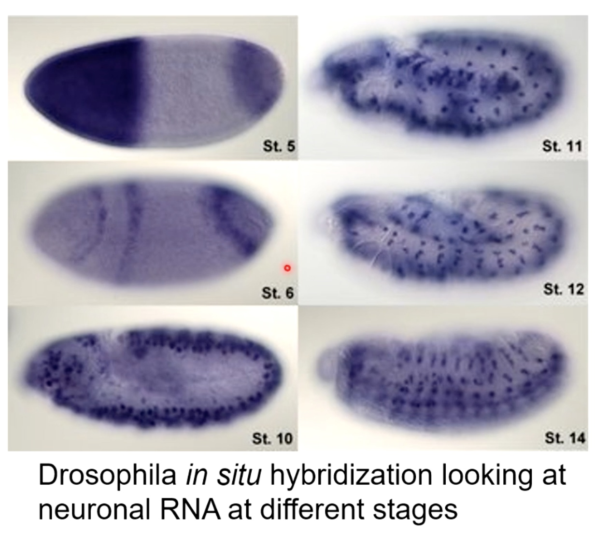
Determining the Location of RNAs - Living Cells
RNA Targeting Cas9
Use dCas9 fused by GFP target to RNA.
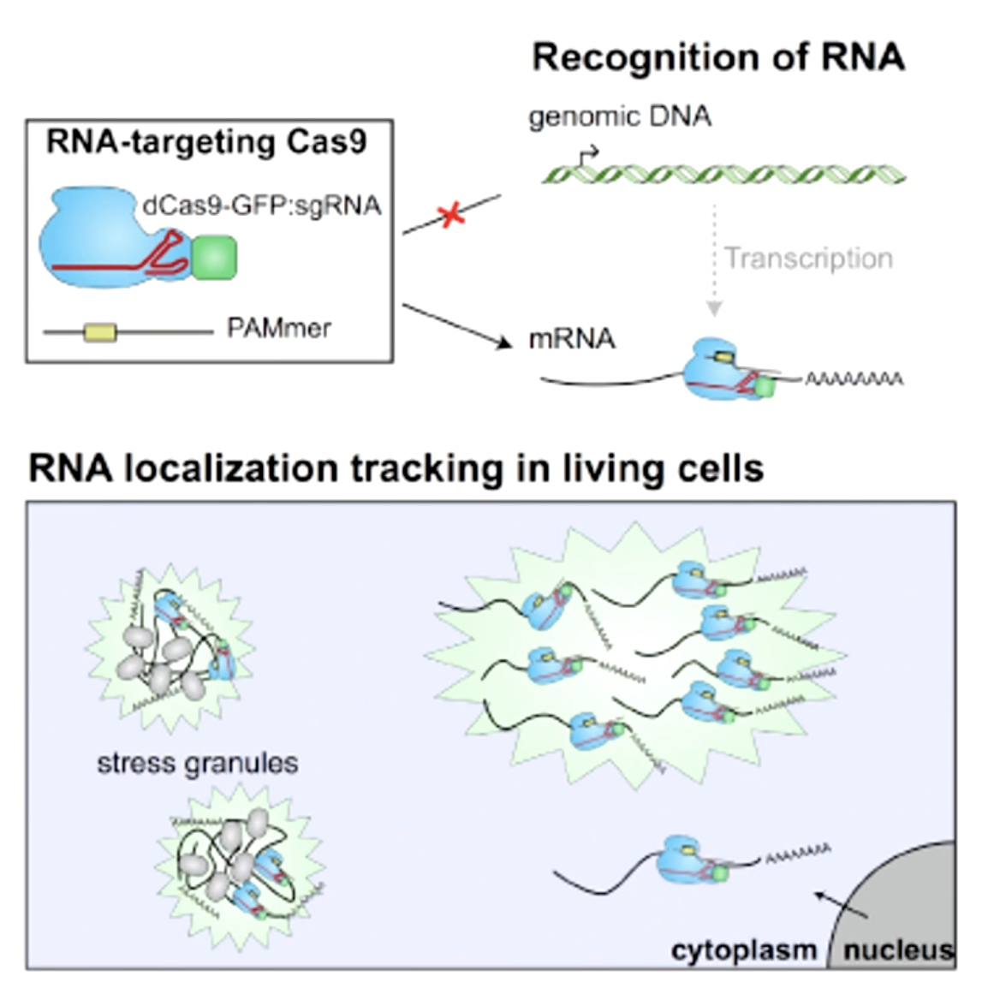
This allows you to visualize RNA movement inreal time
3. Control: how weak/strong is a prtcicular promoter?
- Run-off transcription assay(in vitro)
- Reporter constructs(in vivo)
Run-off transcription assay(in vitro)
Going to run RNA polymerase off the template. All we are realy asking about is initiation of transcription. Because the RNA strand is very short, we need to worry about elongation issues and termination issues.
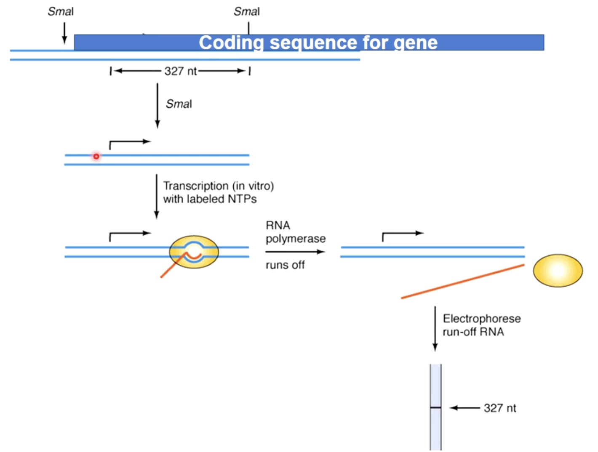
- Use restriction enzyme to create short template
- This eliminates transcription elogation issues
- Then do in vitro transcription, add RNA polymerase on promoters. with labeled NTPs
- Then we get all of the runoff RNA, then quantify using gel electronic freezes and autoradiography.
Reporter constructs(in vivo)
Take any endogenous gene with the promoter in front of the Transcription start site.
We basically create a construct in the cell when we keep the promoter DNA. But we remove the endogenous gene and replace it with the reporter gene(GFP, luciferase, lacZ)
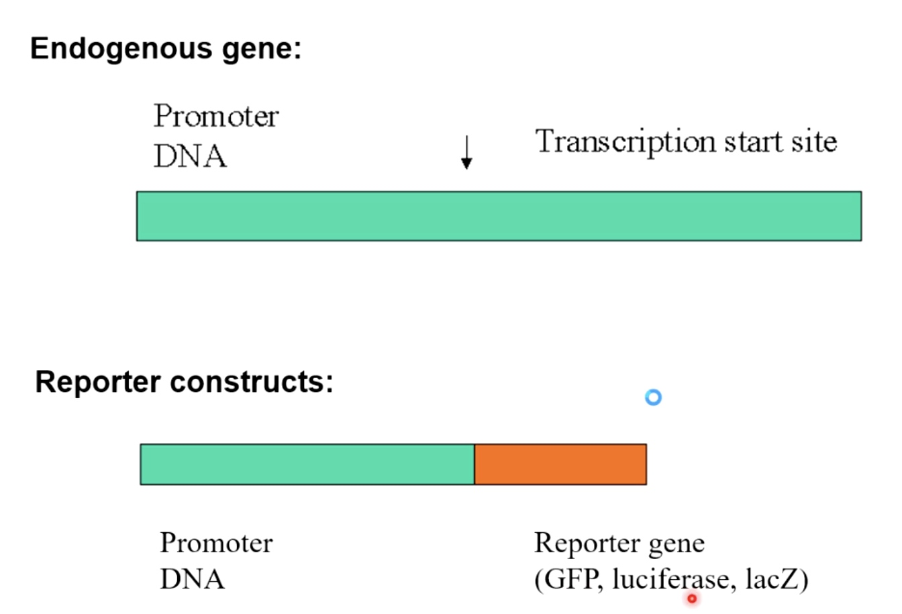
The repoeter constructs then allow you to quantify transcription either through fluorescence, luminescence, or colorimetric staining. Which will tell you how strong or how weak is the promoter DNA upstream at the reporter gene. In being able to activate teh initiation of transcription in a living cell.
Transcription in Bacteria
Transcription of DNA into RNA
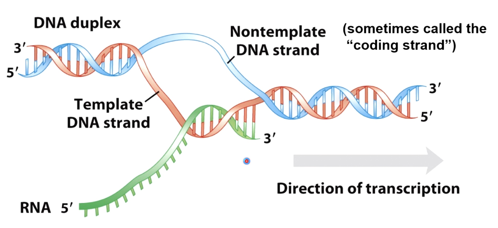
During Transcriptioin, a DNA duplex seperated, an exzyme called RNA polymerase produce a messenger RNA.
-
The information of mRNA is found on the template strand, which is read from 3' to 5'.
-
RNA polymerase synthesize the RNA from 5' to 3'.
-
The nontemplate strand sometimes called the coding strand. Because the sequence of this is identical to the sequence of the mRNA with the exception that thymine is replaced by Uracil.
-
Unlike with DNA replication, no primer is needed for initiation of transcription.
-
In bateria, the meseenger RNA is tanslated immediately because thre is no separation between transcription and translation.
-
In eukaryotes, the RNA is transcribed in the nucleus and has to be transported into the cytoplasm. Meaning there is a delay between transciption and translation.
-
The mRNA in eukaryotes is also processed cotranscriptioinally in the nucleus before it's exported into the cytoplasm.
RNA Synthesis is Chemically Simillar to DNA Synthesis
Same chemistry as DNA replication
Pyrophosphate is released
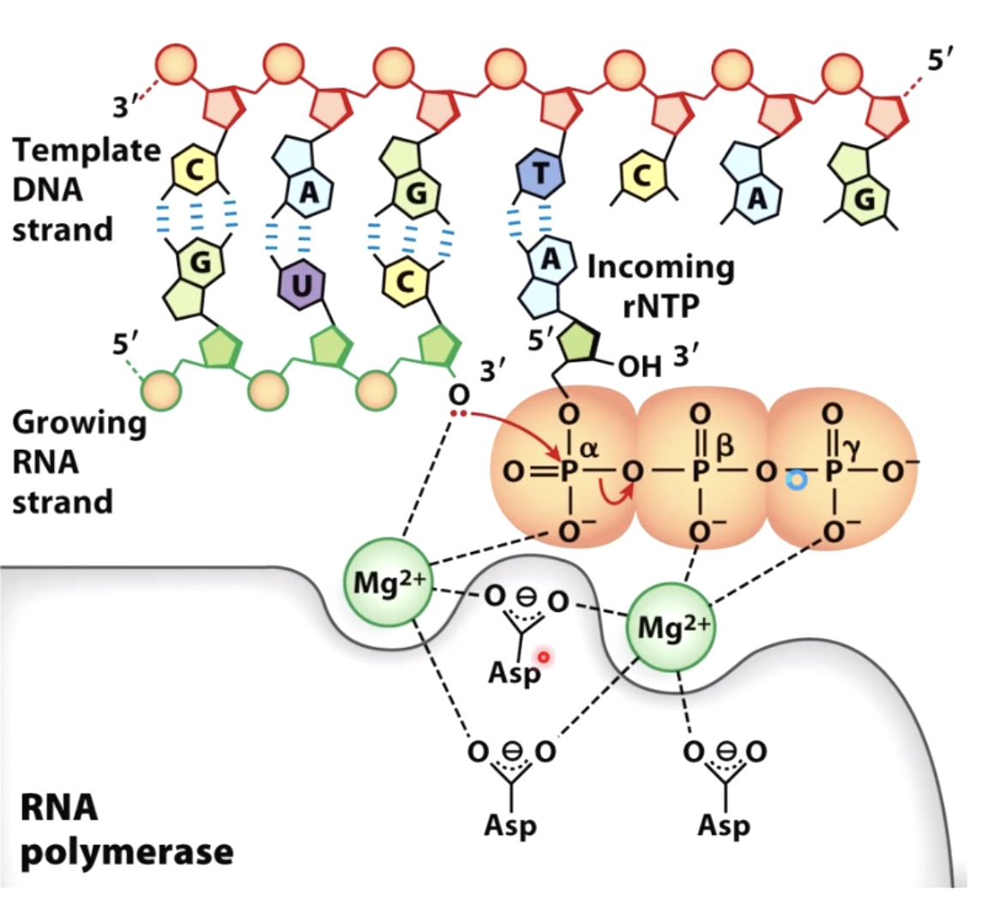
Interestingly, these pyrophosphate is actually able to participate in a process called proofreading
RNA Polymerase can Prrofread, but Error Rate is 10^-4/base Synthesized
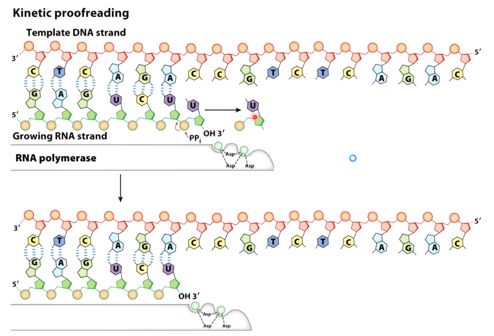
If there is an incorrectly inserted base, pyrophosphate will participate in an attack, which then releases the incorrectly inserted base.
Also known as pyrophosphoryolysis.
Takes place in the same active site as the polymerization reaction.
Analogy: a "backspace" key.
Multiple messages are going to be created for every gene during the process of transcription. The cell just decide it is not worth it to invest enough energy to have high proofreading, and to make sure that the error rate is super low with transcription.
Reason: if one messenger RNA is incorrectly transcribed, it can be degraded, and we can create others
In contrast to DNA, we need to be exactly the same sequence as before.
RNA Polymerase Is Shaped Like a Claw
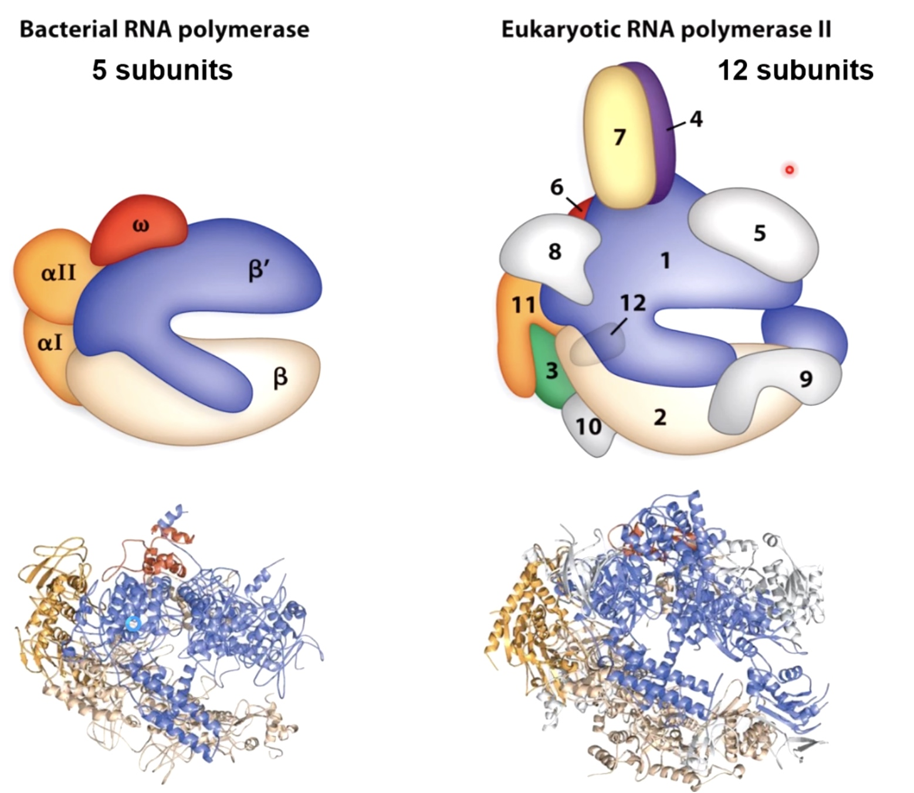
RNA Polymerase Creates a "Transcription Bubble"
The bubble causes the formation of overwhelm DNA in front of the transcription bubble and underwhelmed DNA behind.
Topology is important!
Topoisomerases are required to relieve torsional strain in the DNA to allow the transcription to continue.
Stage of the Transcription Cycle in Bacteria
1.Initiation
- RNA pol binds to promoter - "Closed complex"
- RNA pol melts ~ 14 bp of DNA around promoter - "open complex"(isomerization)
- Synthesis of short transcripts(<10nt) - "abortive transcription" The small transcription will be released without continuation of transcription.still waking up
2. Elongation
- RNA pol begins processive transcription - "promoter clearance"
3. Termination
- RNA sequences being transcribed cause a conformational change in RNA pol
- RNA pol dissociates from the template.
The Transcription Cycle
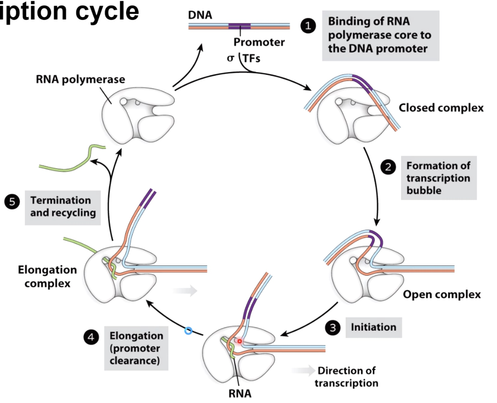
Initiation of Transcription
The RNA polymerase holoenzyme in bactria is composed of both RNA polymerase and sigma factor. The only transcription factor that's required in bacteria for initiation of transcription.
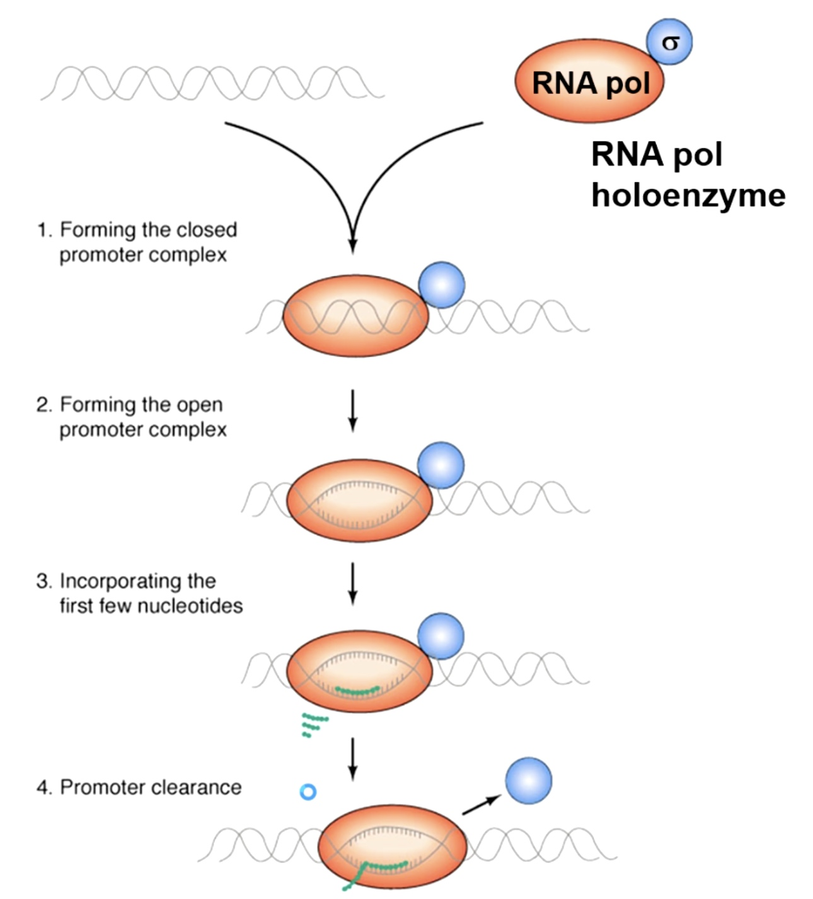
sigma factor used depends on the cellular conditions.
sigma70 is the most common factor.
Structure of a Bacterial Promoter Recognized by Sigma70
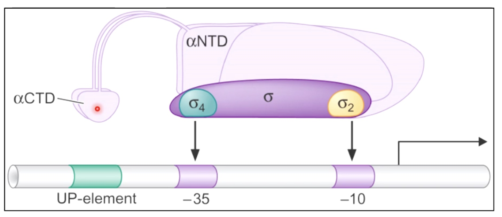
sigma70 is going to recognize particular sequences within a bacterial promoter.
\(\sigma4\) recognize -35 and \(\sigma2\) recognize -10.
RNA polymerase has a carboxyl terminal domain that will interact with sequences within the up element.
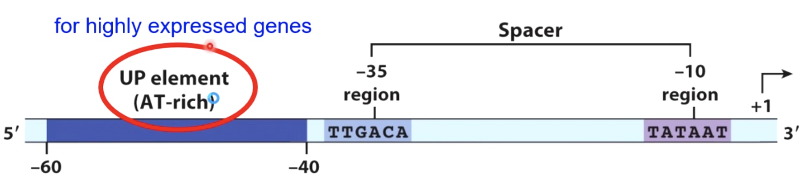
Up-element region is only used for very highly expressed genes. So most of the time this element won't be present witin the promoters. But once it is used, which will result in a great raid of transcription.
It's convention to name the 1st transcribed nucleotide where the transcription start site as +1.
RNA Polymerase Has Both Entry and Exit Channels
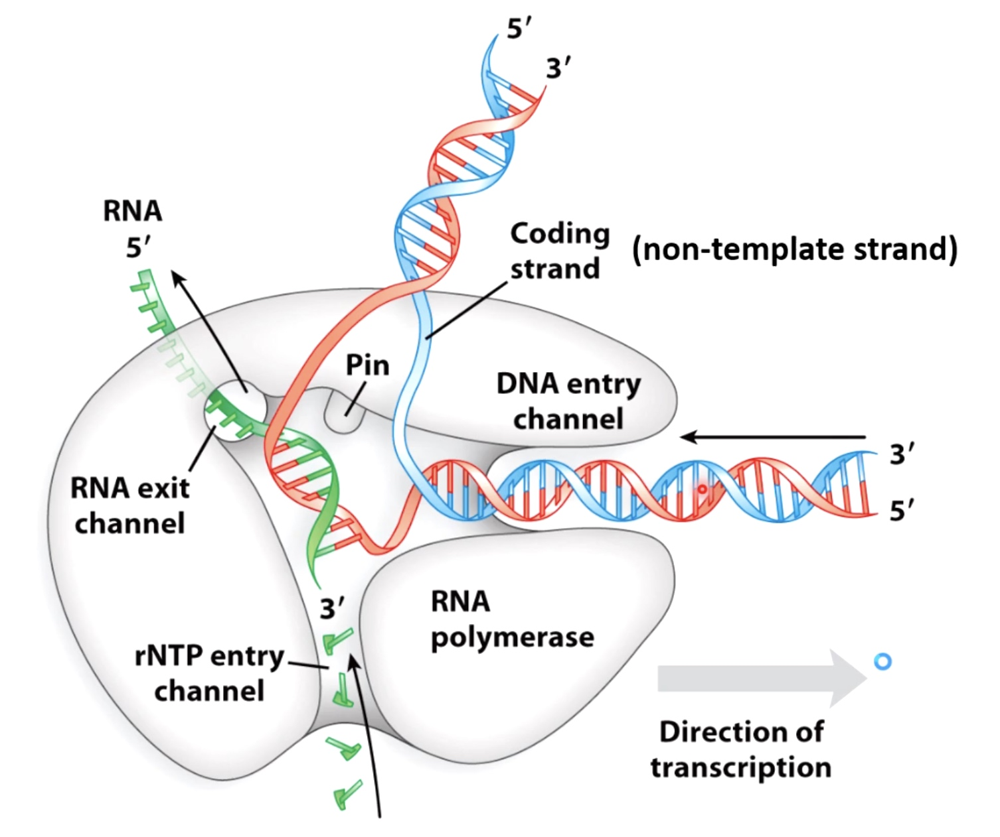
Entered DNA gets split by the Pin region.
Sigma and RNA Pol Undergo Conformational Changes During the Transcription Cycle
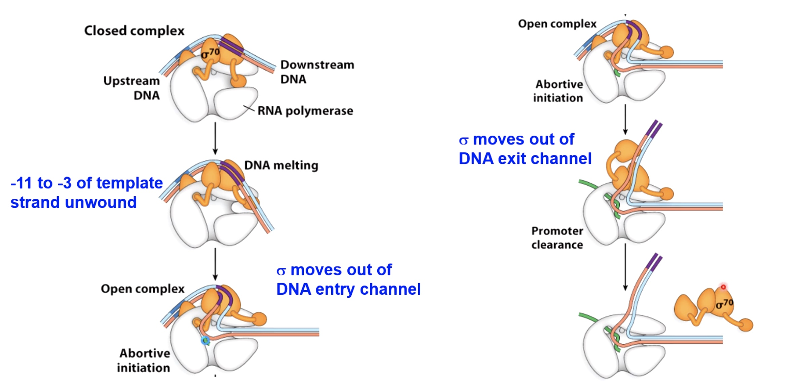
Abortve Initiation Happens Frequently
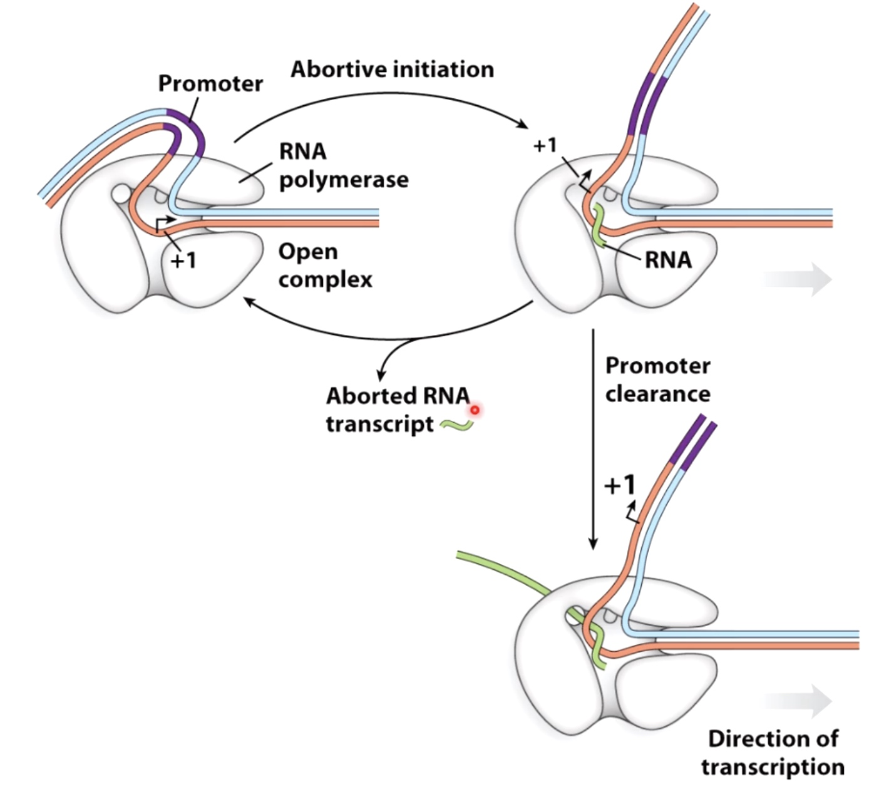
Aborted DNA transcript could paly regulatory roles within the bacteria.
Structural Feature of Sigma that Act During Initiation and Elongation
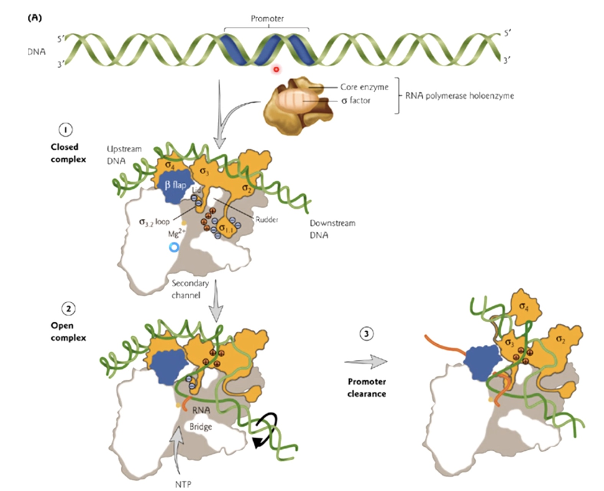
- sigma 1 rotate and let DNA to enter this entry channel.
- Also, there are both negative and postive charges within the sigma factor and RNA polymerase enzyme. That are both interacting with DNA sequences and with the other parts of protein.
Two Mechanisms to Terminate Bacterial Transcription
- Rho-dependent Termination
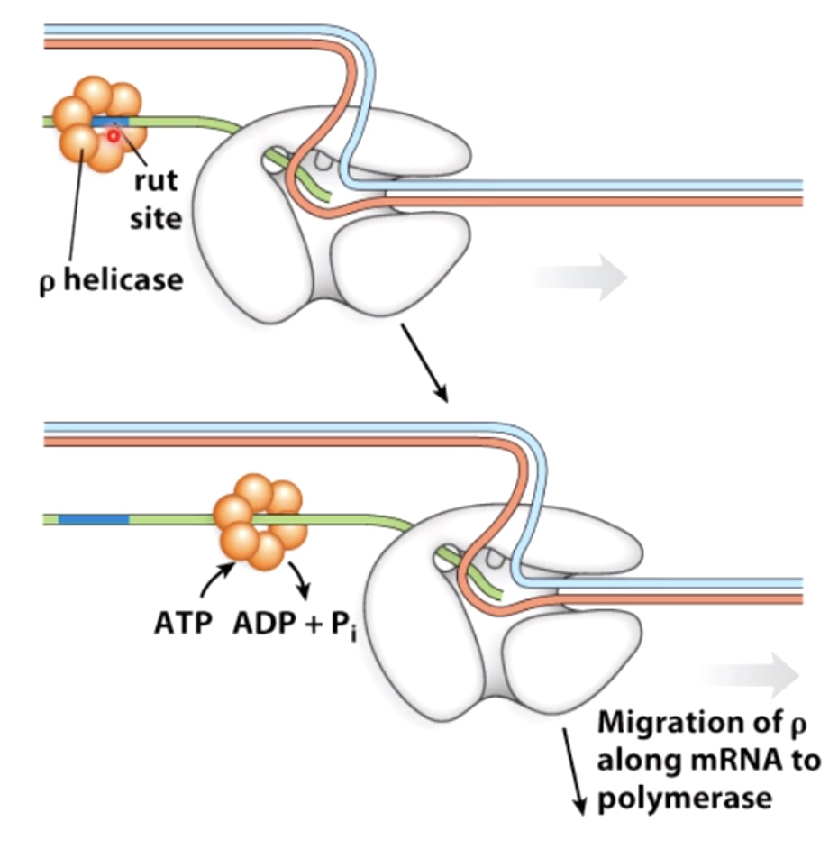
Rho helicase can interact with rut site that are found in the newly synthesized messenger RNA close to the termination site. It can move along using the energy provided by ATP hydrolysis.
- Rho-independent Termination
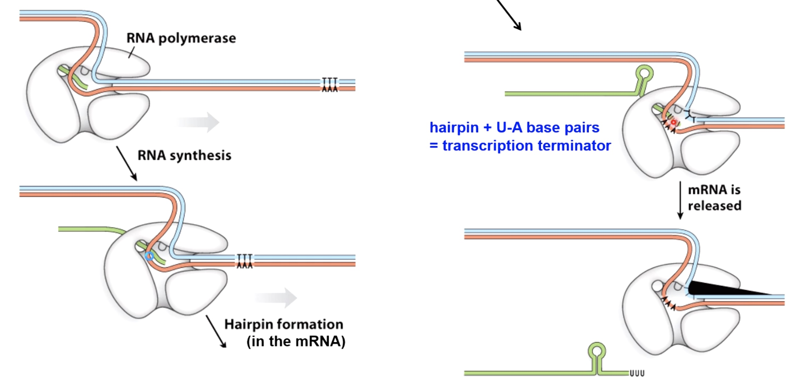